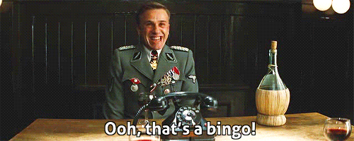

Mircea Popescu, or how to spread 500 words of liquishit and say nothing
About a week ago, I was merrily working on some bot things when this Qntra piece came through my rss feed. I couldn't resist the temptation to lampoon and/or stir the pot and decided to leave a single-sentence comment and wait for the fireworks:
shinohai says: November 14, 2019 at 8:49 pm They'll see the light and switch to writing farticles on mp-turdpress any day now.
A few days later, good 'ol botty gives me another rss ping containing the expected reply:
Mircea Popescu says: November 16, 2019 at 9:40 am No, shitface, they won't do that. What they'll do instead is join the chorus of cripple fucks whining about how nobody can accuse them of not being just like me. You didn't invent that, you know. You're just some shitface-come-lately to the longest ongoing party in the history of the world, it was happening in cesspools before they started building sewage pipes. Now get the fuck lost in your sulkhole for another few years, then come back like maybe nobody remembers you're not on your own power worth the cost of a decent burial. Who knows, maybe that time the world will be more amenable to shitfaces ? "You never know", right ?

Well, I don't take orders from the capricious Caesar anymore, and don't have a sulkhole - I have a lulzhole, and let me tell you TMSR provides plenty of fodder for that lately. So let's have some more fun with this. Botty has an experimental search function, so I dumped "Mircea Popescu" + all the words related to shit into the hopper. The first result? Why it's a reddit post, where it appears a year earlier some of the other TMSR cult members tried to spread the gospel, with the same predictable results I got from my "reddit experiment".
This gem gave me the idea for the title of this post:
oh nu, mircea popescu sau cum sa asterni o diaree de 500 de cuvinte si sa nu zici nimic.
It gets lulzier:
No. Some of us did, around the late 2000's, but he ended with the nickname the irrelevant worm. One can tell so many lies that something is rotten in ... Denmark. He thought that having a blog to swing his dick around would make him someone. That didn't work because he had a shitty view of life, people and everything. Then he moved to harassing other fellow romanian bloggers, random, then bribing to say nice things about them or some shit. He would blatantly lie, make up shit about people or places that his been to or things he might have done, then harass people or bloggers who would call him as a liar and a poser.
Ouch!
Pasting the text from the above comment and running `wc -w comment.txt` on it revealed a word count of 113, so it could have been worse - the recent drama with poor asciilifeform produced a word diarrhea with a count numbering in the thousands which can be found in a search of the logs.
That's all for now folks, please excuse me, I have a lulzhole to go get lost in.